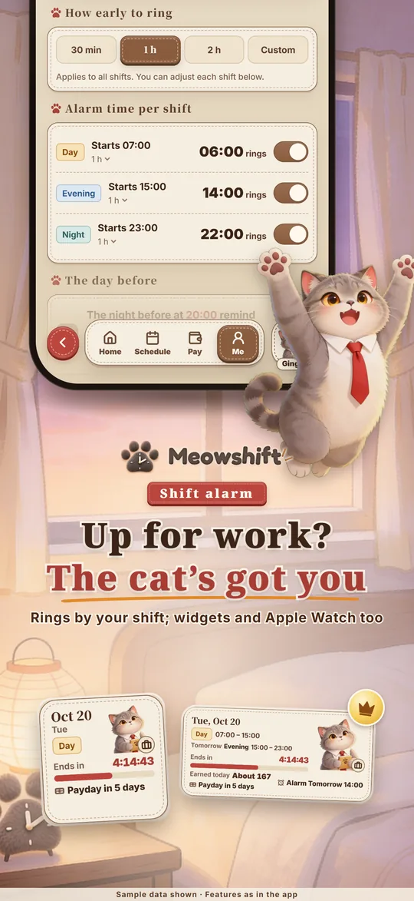

🎁 Весь PRO первые 7 дней


Meowshift сделан для тех, кто работает по сменам: медсёстры, сиделки, сотрудники заводов и магазинов, охрана, гостиницы и рестораны, а также подработка. Внеси смены — и сразу видно, в какие дни работать, во сколько заканчиваешь и сколько примерно получишь в этом месяце.




🎁 Весь PRO первые 7 дней: все функции PRO бесплатны 7 дней после установки, без оплаты и без автоматического списания. Потом можно и дальше бесплатно пользоваться основными функциями или оформить подписку Meowshift PRO.

Цены зависят от региона; актуальная цена указана в App Store или Google Play. Подписка продлевается автоматически, отменить её можно в магазине в любой момент.
Расчёты носят справочный характер; окончательные цифры — в расчётном листке от работодателя.